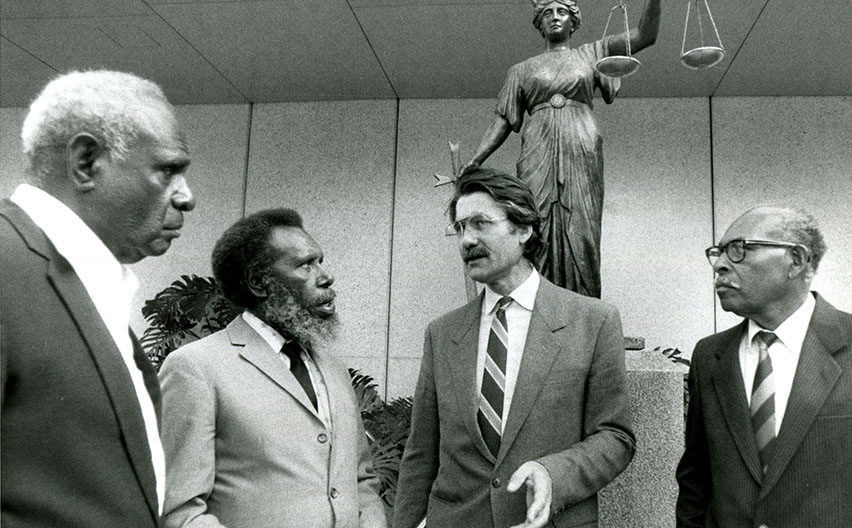

Three Murray Island plaintiffs (Eddie Mabo second from left) and Bryan
Keon-Cohen outside the Queensland Supreme Court in 1989
Here's a time line of Eddie Kioki Mabo's life:
- 1936 - Born in village of Las on the island of Mer in the Torres Strait islands, Quensland.
- 1959 - Moved to Townsvillle, Quensland where he held various jobs including worked on pearling boats, as a cane cutter and a railway fetter. He marries Bonita Neehow, an Australian-born South Sea Islander, and together they have ten children.
- 1973 - Koiki co-founded the Townsville Black Community School, one of the first in Australia.
- 1975 - Koiki joined the National Aboriginal Education Committee (NAEC), and advisory board to the Commmonwealth Education Department where he served for three years.
- 1981 - While working on campus as a gardner, Koiki gave a speech at James Cook Univerisy in Queensland about the land inheritance system on Murray Island. "The significance of this in terms of Australian common law doctrine was noted by one of the lawyers present at the conference. He suggested there should be a test case to claim land rights through the court system. Perth-based solicitor Greg McIntyre agrees to take the case. McIntyre represented Mabo during the hearings.
- 1982 - Koiki and fellow Mer Islanders, Reverend David Passi, Celuia Mapo Salee, Sam Passi and James Rice began their legal claim in the High Court of Australia for ownership of their lands on the island of Mer.
- 1992 - Koiki died of cancer on 21st January. On 3rd June the Hight Court of Australia ruled in his favour and his fellow plaintiffs.
- 1993 - Parliment of Australia passes the Native Title Act 1993 creating a system which will allow Aboriginal and Torres Strait Isladers to make a native title claim over their lands.
"It gave us back our pride. Until Mabo, we had been a forgotten people, even though we knew that we were in the right."